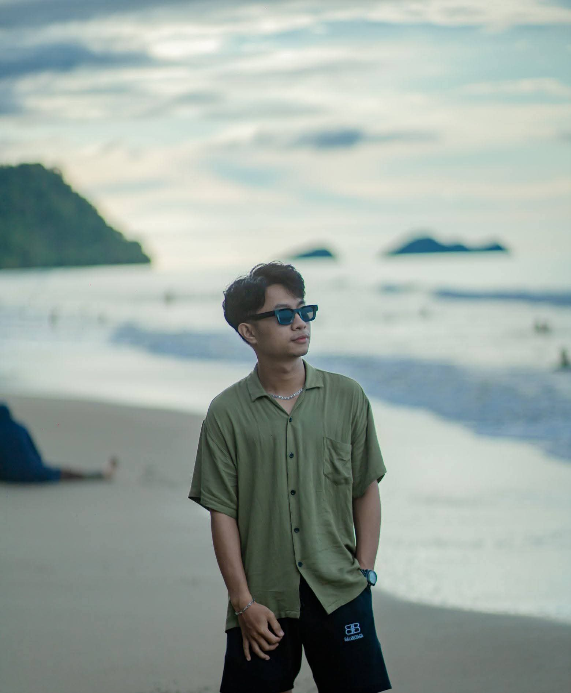

01°N — PesisirPerkenalan diri
Web Developer & Game Developer — membangun sesuatu dari nol, satu baris kode dalam satu waktu.
Saya seorang web developer dan game developer yang paling betah kalau sudah mengoprek sesuatu sampai jadi. Belakangan hobi baru saya adalah prompting AI — mencari tahu sejauh mana ide bisa diubah jadi karya nyata, entah itu website, game, atau eksperimen kecil lainnya.